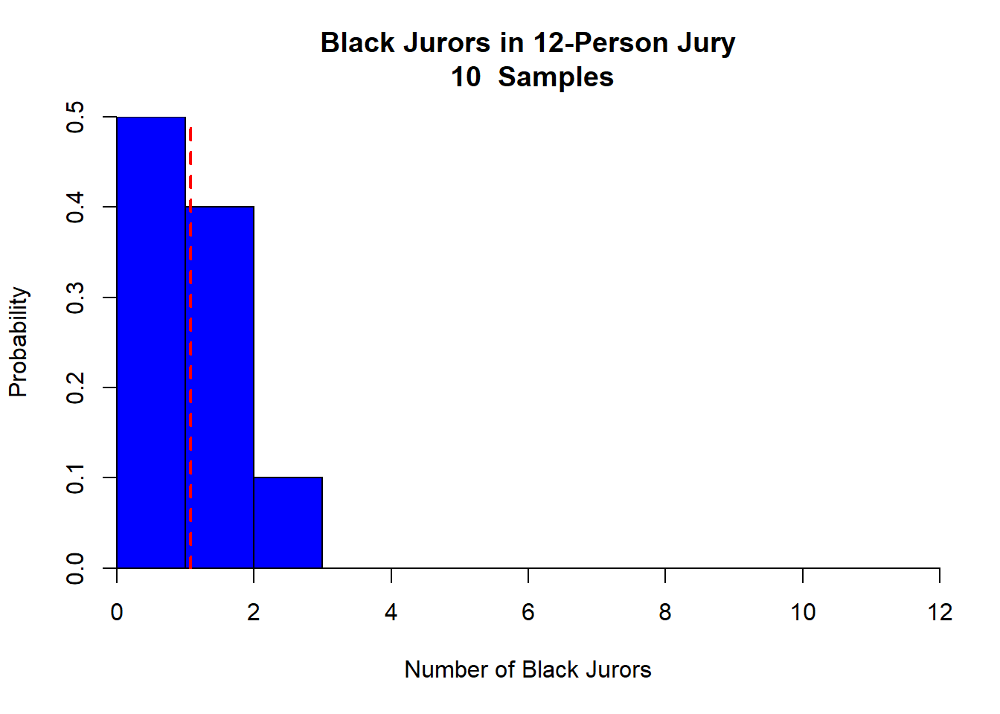
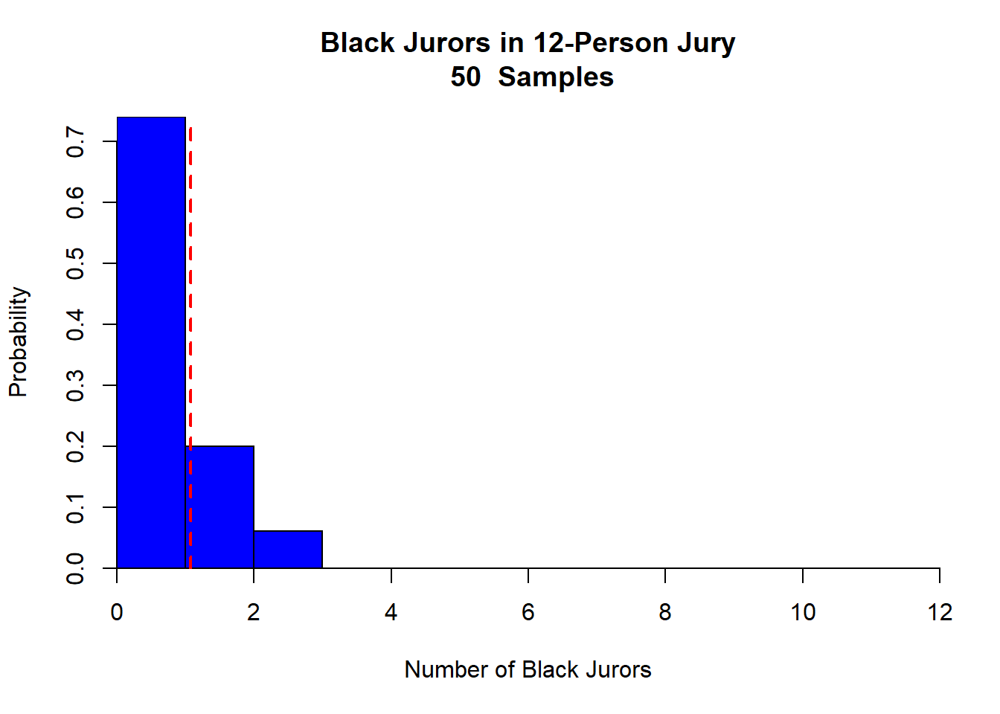
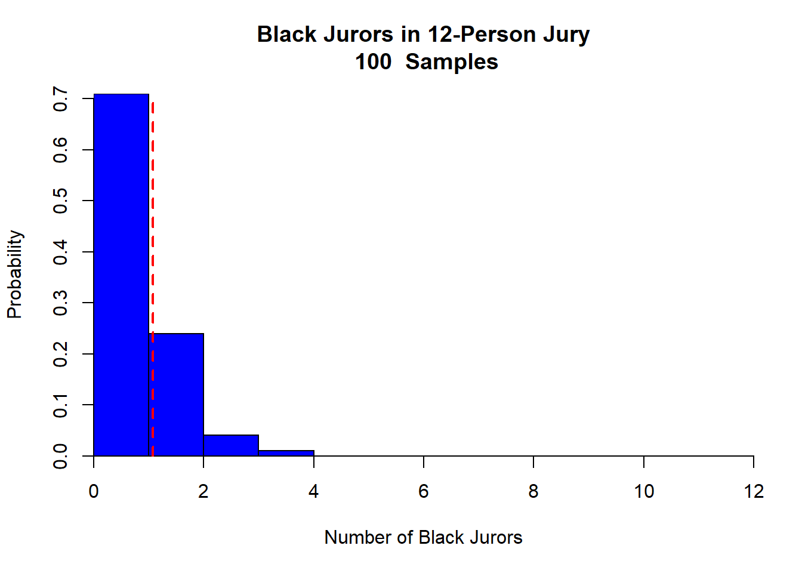
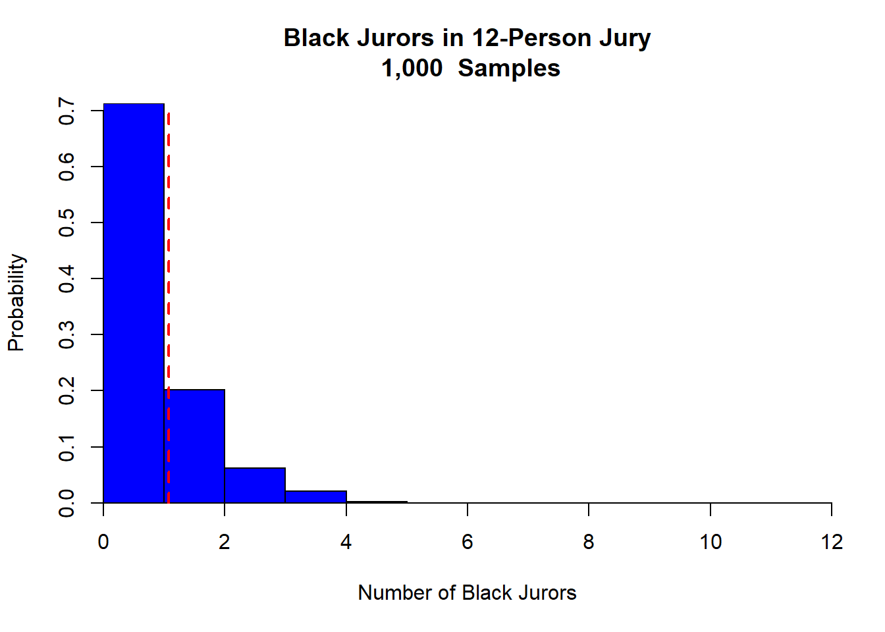
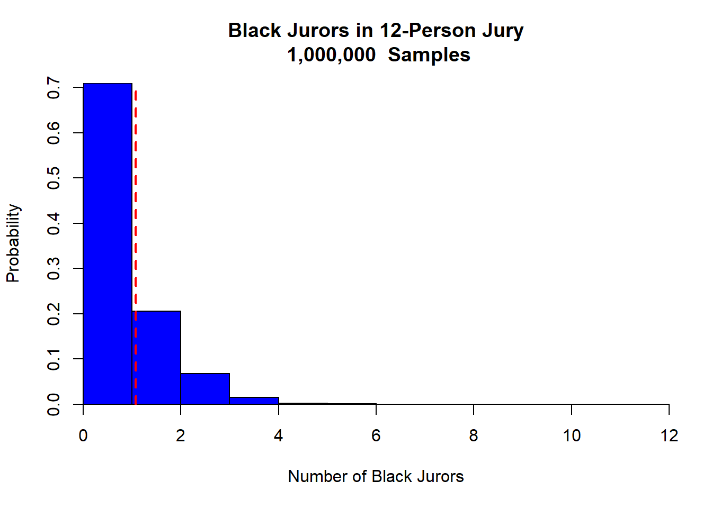

options(scipen = 999)A$AP Rocky
No Black Jurors
Here is the R script if you want to run this at home.
A$AP Rocky on Trial
Today the A$AP Rocky trial is coming to an end. It is a sad case of childish beefs. I have been fairly obsessed with the trial, particularly some aspects that seem unfair. First, the fact that he is facing about 28 years when he could have taken a plea deal and gotten a few weeks in prison. Second, the fact that Rhianna was allowed in the courtroom with her children. And, something that we can actually test: how likely is it that there would be NOT A SINGLE Black juror on the jury given, particularly since the trial is taking place in Downtown Los Angeles.
I looked up how many Black people are in LA county. Surprisingly, only 9% of the county is Black. However, 22.5% of Downtown LA, where the trial is being held, are black.
The Binomial Distribution
- The number of Black jurors is distributed as binomial as follows:
\[X \sim Binomial(n = 12, p = .09)\]
This is because each juror is either Black (success) or not (failure), so the number of Black jurors follows a discrete, right-skewed distribution, especially when \(p\) is small.
Sample Size
The Central Limit Theorem (CLT) only applies when the number of trials per sample (in this case, jury size) is large. Here, each jury selection has only 12 jurors—which is not enough for the binomial distribution to resemble a normal curve.
For a binomial distribution to appear normal, you typically need: \[np > 10\] and \[n(1-p) > 10\]. Here \(np < 10\).
Disable scientific notation to ensure large numbers are displayed in full (not in exponential form)
Function to simulate a single jury selection
- Randomly select
n_jurorsfrom a total population oftotal_population - Each number represents a juror, where values below
Black_thresholdindicate Black jurors - This means that the the number of Black people in the jury pool is 9% which is the composition of Black folks in LA county
- As an exercise, change this value to reflect 25% and see how the distribution changes
jury_experiment <- function(n_jurors = 12, total_population = 1000, Black_threshold = 90) {
sample(1:total_population, size = n_jurors, replace = TRUE)
}Function to run multiple jury selections
- Repeat the
jury_experimentfunctionn_simulationstimes, storing results in a matrix - Convert the matrix to a data frame where:
- Each row represents one simulated jury selection
- Each column corresponds to one of the 12 selected jurors in that jury
- Count the number of Black jurors in each jury
- Black jurors are those whose values are less than
Black_threshold(9% of total population) - Return the dataframe containing all jury simulations and their respective Black juror counts
simulate_juries <- function(n_simulations, n_jurors = 12, total_population = 1000, Black_threshold = 90) {
many_juries <- replicate(n_simulations, jury_experiment(n_jurors, total_population, Black_threshold))
jury_df <- as.data.frame(t(many_juries))
jury_df$no_Black_jurors <- rowSums(jury_df < Black_threshold)
return(jury_df)
}Simulation
Define different sample sizes representing increasing numbers of jury selections. This allows us to see how the sampling distribution stabilizes with larger sample sizes
sample_sizes <- c(10, 50, 100, 1000, 100000, 1000000)How many jurors would you expect?
Compute the expected number of Black jurors per 12-person jury. Since 9% of the total population is Black, we expect \(12 * 0.09 = 1.08\) Black jurors on average.
expected_black_jurors <- 12 * 0.09Plot the results
Set up the plotting layout for 6 histograms arranged in a 2-row by 3-column grid
par(mfrow=c(2,3))Draw Conclusions: Was the trial fair?
- Loop over different sample sizes to run simulations and generate histograms
- Run the simulation for
n_simjury selections, each consisting of 12 jurors - Generate a histogram for the number of Black jurors per 12-person jury
- Add a vertical red dashed line to indicate the expected value of Black jurors (1.08)
for (n_sim in sample_sizes) {
jury_df <- simulate_juries(n_simulations = n_sim, n_jurors = 12, total_population = 1000, Black_threshold = 90)
hist(jury_df$no_Black_jurors,
breaks=seq(0, 12, by=1), # Bins for the histogram (0 to 12 Black jurors)
freq=FALSE, # Display relative frequency instead of counts
col="blue", # Use blue color for bars
main=paste("Black Jurors in 12-Person Jury\n", format(n_sim, big.mark=","), " Samples"),
xlab="Number of Black Jurors",
ylab="Probability",
yaxs="i", xaxs="i")
abline(v = expected_black_jurors, col="red", lwd=2, lty=2)
}



